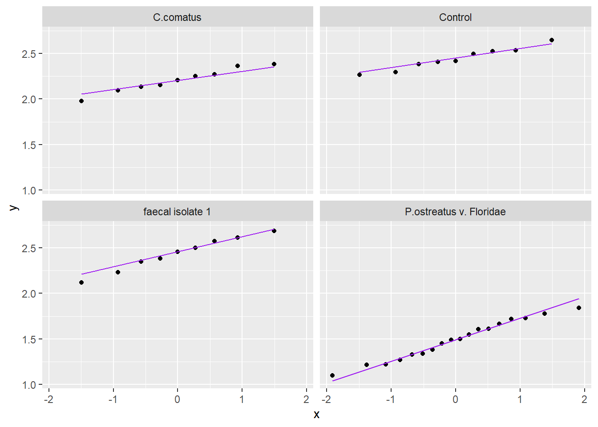
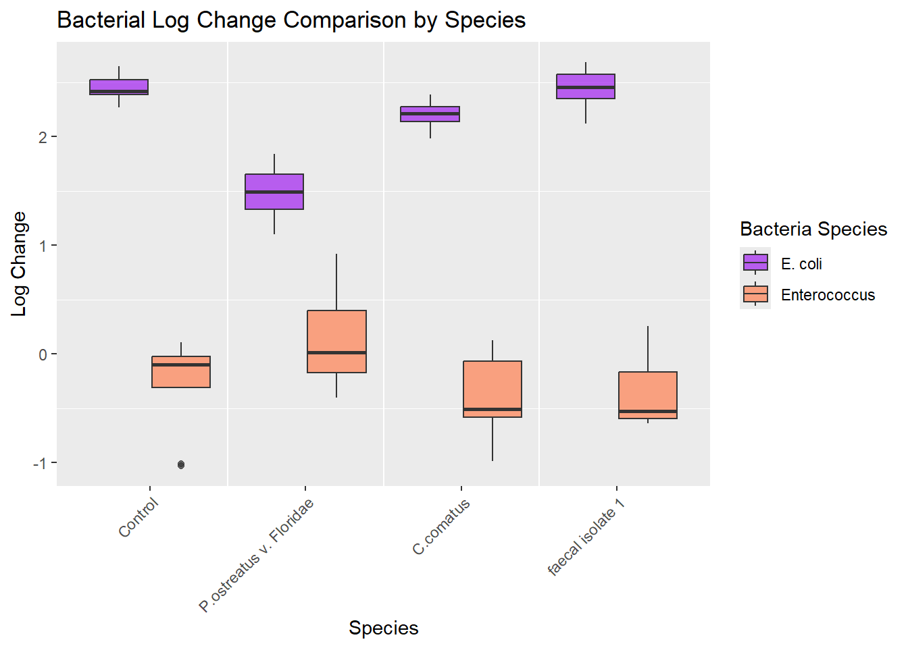

###Load necessary packages for analysis
#| echo: false # Hide code
#| results: hide # Hide text output
#| include: false # Hide plots
#| warning: false
library("tidyverse")
library(ggplot2)
library("knitr")
library("rstatix")
library("dplyr")
library("gt")
knitr::opts_knit$set(root.dir = ("../data"))
growth_speed_analysis <-read.csv("../data/processed/growth_speed_analysis.csv")
bacteria_analysis <-read.csv("../data/processed/bacteria_analysis.csv")Report for RBTL
Exploring fungi for faecal treatment
Introduction
Globally, a significant portion of the population lacks access to safe sanitation, leading to the spread of diarrheal diseases and environmental contamination from untreated faecal sludge. While urine diversion dry toilets (UDDTs) offer a potential solution by separating nutrient-rich urine for fertilizer, the handling and potential pathogen reactivation in faeces remain challenges. Current practices like desiccation with additives often fail to completely eliminate pathogens, necessitating improved treatment methods.
The introduction of active microbes, specifically filamentous fungi, to sanitize faeces is a novel approach yet to be extensively studied. Fungi are powerful decomposers in nature, utilizing enzymes to break down complex organic matter. Coprophilous fungi, adapted to nutrient-rich dung, have evolved mechanisms to thrive in environments with high microbial competition. Interestingly, preliminary research indicates that even non-dung-adapted white-rot fungi can colonize human faeces and reduce odour.
This doctoral thesis aims to investigate the potential of fungal species to utilize faeces as a nutrient source, reduce the concentration of harmful bacteria, and alter the physical properties of the faecal mass. Understanding these interactions could lead to the development of fungal inoculum as an effective and sustainable method for treating faecal waste in UDDTs, thereby mitigating health risks and shortening the required storage time for safe disposal or agricultural use.
Within this lecture of rbtl the code for data cleaning and analysis will be developped and tested using a example data set with non-real data.
In order to test the capability of fungi to grow on human faeces, a petri dish based assay will be developed to measure growth speed and log-change of E. coli and Enterococcus before and after fungal over growth.
Methods
The data structure will be created in the following way
For the different task of the experiment separate tables will be generated.
faeces_1_1: Contains the data of the faecal collection creating one row of data for each faecal collection campaign.
inoculum_1_1: Stores the data for the inoculum used in the experiments.
bacterial_analysis_1_1: Contains the data about bacteria concentration after fungal co-incubation.
growth_speed_analysis_1_1: In this table each row will refer to a area size measured by image analysis for each picture
experiments_1_1: This table will store the experimental set up linking together all the tables using shared IDs
Tables will be created using google_sheets, and stored on google drive.
Data analysis and figures will be created using R (Rsstudio V.2025.05.0 Build 496).
An R-script for Loading the relevant data (01-data_download) will be created and another one will clean the data and prepare it for the analysis (02-data_cleaning.R). This R scripts are stored in the folder fungal-faecal-treatment/R
Data files will be saved in the folder data processed with their corresponding name for the analysis. (growth_speed_analysis and bacteria_analysis)
Results
The following graphics have been generated using the prepared data analysis scripts.
| species | variable | statistic | p |
|---|---|---|---|
| C.comatus | mean_growth_speed | 0.9377964 | 0.55890399 |
| P.ostreatus v. Floridae | mean_growth_speed | 0.8677438 | 0.01633673 |
| faecal isolate 1 | mean_growth_speed | 0.8486212 | 0.07195888 |
###qq-plot for each species
ggplot(mean_growth_speed_species, aes(sample = `mean_growth_speed`)) +
geom_qq() +
facet_wrap(vars( species)) +
geom_qq_line(color = "purple")
Mean growth speed analysis of fungal species
#|echo: false
#| label: fig-2
#| fig-cap: "Mean growth speed of three fungal species on human faeces"
#Remove control from growth speed assays
growth_speed_analysis|>
filter(species != "Control")|>
ggplot(growth_speed_analysis,
mapping=aes(x=species, y=mean_growth_speed))+
labs(
title = "Mean growthspeed by Species",
x = "Species",
y ="Growth rate [cm^2/day]",
color = "Species", caption="Mean growth speed of three fungal species on human faeces") +
geom_boxplot()
\@fig-1 Presents the mean growth speed difference between tested fungal species. In this test data set P. ostreatues is slower?
Statistical analysis of growth speed
#Statistical analysis for E. coli and Enterococcus
###ANOVA for ecoli
growth_speed_anova <- mean_growth_speed_species |>
anova_test(mean_growth_speed ~ species)
growth_speed_anova|>
gt(caption="ANOVA results for Ecoli Log-change")| Effect | DFn | DFd | F | p | p<.05 | ges |
|---|---|---|---|---|---|---|
| species | 2 | 33 | 0.924 | 0.407 | 0.053 |
Tukey-test for growth speed
growth_speed_tukey_results <- mean_growth_speed_species |>
tukey_hsd(mean_growth_speed ~ species)
growth_speed_tukey_results|>
gt(caption = "Tukey-test results for mean growth speed for fungal species")| term | group1 | group2 | null.value | estimate | conf.low | conf.high | p.adj | p.adj.signif |
|---|---|---|---|---|---|---|---|---|
| species | C.comatus | faecal isolate 1 | 0 | -0.3957891 | -2.352880 | 1.5613018 | 0.874 | ns |
| species | C.comatus | P.ostreatus v. Floridae | 0 | -0.9116066 | -2.606497 | 0.7832838 | 0.394 | ns |
| species | faecal isolate 1 | P.ostreatus v. Floridae | 0 | -0.5158175 | -2.210708 | 1.1790729 | 0.738 | ns |
No signifact difference between the growth speed of the three fungal species \@tbl-1
Influence of the inoculum material on the growth speed
growth_speed_analysis|>
filter(species == "P.ostreatus v. Floridae")|>
ggplot(growth_speed_analysis,
mapping=aes(x=species, y=mean_growth_speed, fill= material))+
labs(
title = "Mean growthspeed by Species",
x = "Species",
y ="Growth rate [cm^2/day]",
color = "Species") +
geom_boxplot()
Bacterial analysis
In this section the bacteria log-change for E. coli and E. faecalis will be analysed. The log change is calculated from the original measured bacteria concentration from the faecal table and the measured value after co-incubation.
To test the collected data for normal distribution we will make a qq-plot and a shapiro test
| species | variable | statistic | p |
|---|---|---|---|
| C.comatus | log_change_ecoli | 0.9732321 | 0.9208701 |
| Control | log_change_ecoli | 0.9679897 | 0.8770107 |
| P.ostreatus v. Floridae | log_change_ecoli | 0.9721580 | 0.8371512 |
| faecal isolate 1 | log_change_ecoli | 0.9763849 | 0.9431555 |
###qq-plot for each species
ggplot(ecoli_log, aes(sample = `log_change_ecoli`)) +
geom_qq() +
facet_wrap(vars( species)) +
geom_qq_line(color = "purple")

#| echo: false
#| label: tbl-3
#| tbl-cap: "Shapiro-test for Enterococcus log change in fungal treated faeces compared to uninoculated control"
###Testing data for normal distribution enterococcus
enterococcus_log <- bacteria_analysis|>
dplyr::select(species, log_change_enterococcus)
shapiro_enterococcus <- enterococcus_log |>
group_by(species)|>
shapiro_test(log_change_enterococcus)
shapiro_enterococcus|>
gt()| species | variable | statistic | p |
|---|---|---|---|
| C.comatus | log_change_enterococcus | 0.9477965 | 0.66589170 |
| Control | log_change_enterococcus | 0.7822569 | 0.01278608 |
| P.ostreatus v. Floridae | log_change_enterococcus | 0.9361739 | 0.24896629 |
| faecal isolate 1 | log_change_enterococcus | 0.8240756 | 0.03830603 |
#| label: fig-4
#| fig-cap: "log change of three fungal species on human faeces compared to uninoculated control"
###qq-plot for each species
ggplot(enterococcus_log, aes(sample = `log_change_enterococcus`)) +
geom_qq() +
facet_wrap(vars( species)) +
geom_qq_line(color = "purple")
Since the data in each of the categories is following a normal distribution an ANOVA and post-hoc Tukey test can be done.
Statistical analysis
#| echo: false
#| label: tbl-3
#| tbl-cap: "Shapiro-test for Enterococcus log change in fungal treated faeces compared to uninoculated control"
#Statistical analysis for E. coli and Enterococcus
###ANOVA for ecoli
ecoli_anova <- ecoli_log |>
anova_test(log_change_ecoli ~ species)
ecoli_anova|>
gt(caption="ANOVA results for Ecoli Log-change")| Effect | DFn | DFd | F | p | p<.05 | ges |
|---|---|---|---|---|---|---|
| species | 3 | 41 | 89.069 | 5.34e-18 | * | 0.867 |
tukey_results <- ecoli_log |>
tukey_hsd(log_change_ecoli ~ species)
# Add significance symbols/letters
tukey_results_formatted <- tukey_results |>
add_significance("p.adj") |>
mutate(p.adj = scales::pvalue(p.adj))
tukey_results_formatted|>
gt(caption = "Tukey-test results for Log-change of E. coli")| term | group1 | group2 | null.value | estimate | conf.low | conf.high | p.adj | p.adj.signif |
|---|---|---|---|---|---|---|---|---|
| species | C.comatus | Control | 0 | 0.23630477 | 0.010574292 | 0.4620352 | 0.037 | * |
| species | C.comatus | faecal isolate 1 | 0 | 0.22903906 | 0.003308582 | 0.4547695 | 0.046 | * |
| species | C.comatus | P.ostreatus v. Floridae | 0 | -0.71733379 | -0.912822115 | -0.5218455 | <0.001 | **** |
| species | Control | faecal isolate 1 | 0 | -0.00726571 | -0.232996187 | 0.2184648 | >0.999 | ns |
| species | Control | P.ostreatus v. Floridae | 0 | -0.95363856 | -1.149126884 | -0.7581502 | <0.001 | **** |
| species | faecal isolate 1 | P.ostreatus v. Floridae | 0 | -0.94637285 | -1.141861174 | -0.7508845 | <0.001 | **** |
### ANOVA for Enterococcus
enterococcus_anova <- enterococcus_log |>
anova_test(log_change_enterococcus ~ species)
enterococcus_anova|>
gt(caption = "ANOVA results for Log-change of Enterococcus")| Effect | DFn | DFd | F | p | p<.05 | ges |
|---|---|---|---|---|---|---|
| species | 3 | 41 | 5.593 | 0.003 | * | 0.29 |
tukey_results <- enterococcus_log |>
tukey_hsd(log_change_enterococcus ~ species)
tukey_results|>
gt(caption = "Tukey-test results for Log-change of Enterococcus")| term | group1 | group2 | null.value | estimate | conf.low | conf.high | p.adj | p.adj.signif |
|---|---|---|---|---|---|---|---|---|
| species | C.comatus | Control | 0 | 0.08548954 | -0.380135597 | 0.5511147 | 0.9610 | ns |
| species | C.comatus | faecal isolate 1 | 0 | 0.02444233 | -0.441182811 | 0.4900675 | 0.9990 | ns |
| species | C.comatus | P.ostreatus v. Floridae | 0 | 0.49292635 | 0.089683150 | 0.8961695 | 0.0112 | * |
| species | Control | faecal isolate 1 | 0 | -0.06104721 | -0.526672354 | 0.4045779 | 0.9850 | ns |
| species | Control | P.ostreatus v. Floridae | 0 | 0.40743681 | 0.004193607 | 0.8106800 | 0.0468 | * |
| species | faecal isolate 1 | P.ostreatus v. Floridae | 0 | 0.46848402 | 0.065240821 | 0.8717272 | 0.0172 | * |
Graphical of the log change for both bacteria compared to control
#| echo: false
#| label: tbl-3
#| tbl-cap: "Shapiro-test for Enterococcus log change in fungal treated faeces compared to uninoculated control"
##Both in one plot
log_change_both <- bacteria_analysis |>
pivot_longer(
cols = starts_with("log_change_"), # Select both log-change columns
names_to = "bacteria", # New column for bacteria type
values_to = "log_change" # New column for log-change values
)
log_change_both$species <- factor(log_change_both$species, levels = c("Control", "P.ostreatus v. Floridae", "C.comatus", "faecal isolate 1"))
y_markings <- seq(0, 2, by = 1)
ggplot(log_change_both, aes(x = species, y = log_change, fill = bacteria)) +
geom_boxplot(position = position_dodge(width = 0.8), alpha = 0.7) +
labs(
x = "Species",
y = "Log Change",
fill = "Bacteria Species",
title = "Bacterial Log Change Comparison by Species"
) +
scale_fill_manual(
values = c("log_change_ecoli" = "purple", "log_change_enterococcus" = "coral"),
labels = c("E. coli", "Enterococcus")
) +
#Making lines separating the different species
geom_vline(xintercept = 1.5, color = "white") +
geom_vline(xintercept = 2.5, color = "white") +
geom_vline(xintercept = 3.5, color = "white")+
theme(axis.text.x = element_text(angle = 45, hjust = 1), panel.grid.major = element_blank())
Conclusions
The produced data structure and scripts can be used on the test data set, to visualize mean growth speed differences between species. With the Bacterial And would allow for analysis of growth speed analysis of fungal data and bacterial concentration change analysis on faeces.